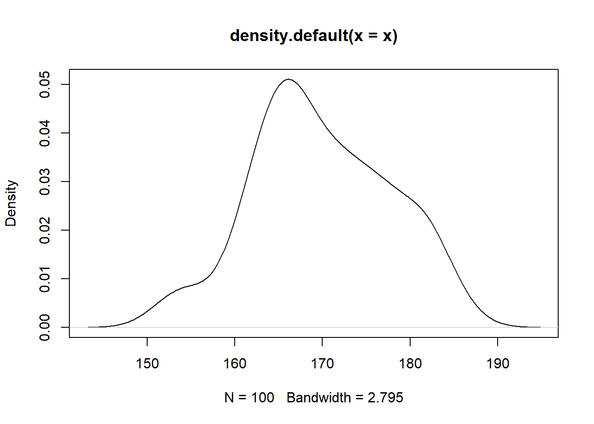
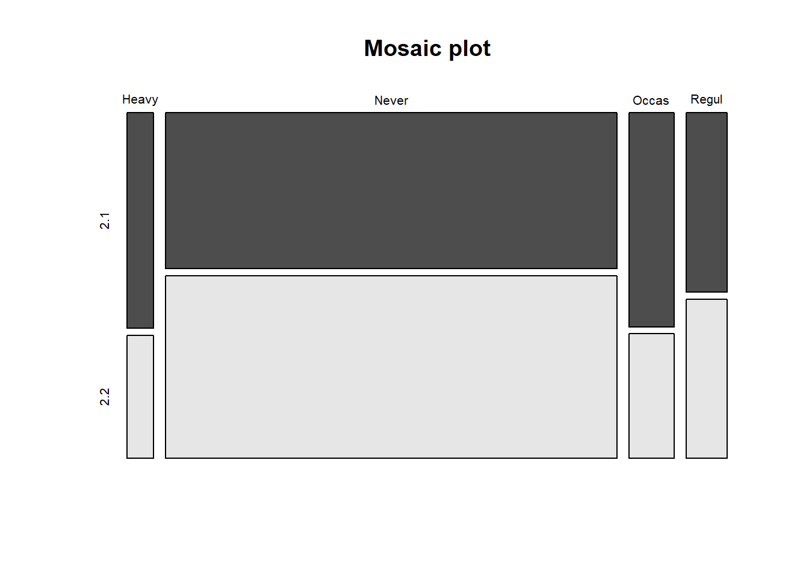

Pruebas no paramétricas
Gran parte de los procedimientos descritos anteriormente de test de hipótesis, consideran que las observaciones provienen de poblaciones normales. En muchas situaciones este supuesto no se cumple. Una alternativa a la no normalidad de los datos, es proceder a implementar test no paramétricos.
Pruebas de normalidad
Test de Kolmogorov-Smirnov
Este test nos permite contrastar si un conjunto de datos muestrales proviene de una población normal. El contraste es el siguiente.
\[H_0: \quad Los\quad datos\quad se\quad distribuyen \quad normal\] \[H_1: \quad Los\quad datos\quad no \quad se\quad distribuyen \quad normal\]
Ejemplo en R
Se generan 100 observaciones de una población normal con media 170 y desviación estándar 8. Note que estas pueden ser muestras de estaturas de individuos. Veamos si los datos generados realmente provienen de una normal.
x=rnorm(100,170,8)
plot(density(x))
ks.test(x, "pnorm",170,8)¿Según los criterios vistos en clase cuál es la desición apropiada?
Test de Shapiro-Wilk
También se usa para contrastar normalidad de un conjunto de datos. Ésta es una alternativa más potente que la prueba de Kolmogorov-Smirnov.
Ejemplo en R
Se mide las concentraciones de cortisol en dos grupos de mujeres antes de dar a luz. Al grupo 1 se le practicó una cesárea de urgencias después de inducido el parto. Las del grupo 2, dieron a luz mediante operación cesárea o vía vaginal después de presentarse el trabajo de parto expontáneamente.
- Verifique normalidad en los conjuntos de datos usando α = 0.05.
- Verifique la igualdad de varianzas entre los grupos de datos
- Según la prueba de varianzas, que prueba recomienda para comparar las medias entre los grupos de madres
###Ingresamos los datos como vectores de los dos grupos de madres
grupo1=c(411,466,432,409,381,363,449,483,438,381)
grupo2=c(584,553,516,688,650,590,574,700,831,688,478,689)
## Prueba de normalidad
shapiro.test(grupo1)
shapiro.test(grupo2)
## Prueba de igualdad entre varinzas
var.test(grupo1,grupo2)
## prueba de diferencias entre medias
t.test (grupo1,grupo2,paired=FALSE,conf.level=0.95)Test de Mann-Whitney o prueba de wilcoxon
Es una prueba no paramétrica con la cual se identifican diferencias entre dos poblaciones basadas en el análisis de dos muestras independientes. Es la versión no paramétrica del test t-Student de diferencias de medias.
Prueba de wilcoxon en R
Los datos siguientes datos corresponden a constantes de permeabilidad de la membrana chorioamnion en humanos (una membrana placentaria) medida a las 12 y 26 semanas de edad gestacional.
realice una prueba de normalidad para verificar la normalidad en los conjuntos de datos
Asumiendo que los datos no son normales, pruebe aun nivel de significancia de α = 0.05 para chequear la alternativa, mayor permeabilidad de la membrana chorioamnion para el inicio del embarazo.
x=c(0.80, 0.83, 1.89, 1.04, 1.45, 1.38, 1.91, 1.64, 0.73, 1.46)
y=c(1.15, 0.88, 0.90, 0.74, 1.21)
# prueba no parametrica dewilcoxon
wilcox.test(x,y, alternative = "g")
##PRUEBA DE NORMALIDAD
shapiro.test(x)
shapiro.test(y)Prueba t-Student en R
Los siguientes datos corresponden al rendimiento por hectárea de cierta nueva variedad de trigo, medido en 9 lotes experimentales:
3,35; 3,92; 4,26; 3,36; 3,72; 4,19, 3,42; 4,38; 4,5.3
Realice una prueba de normalidad sobre el vector de datos
Construya un intervalo de confianza al 90% de confianza para el rendimiento promedio de la nueva variedad de trigo si suponemos que el rendimiento por hectárea se distribuye aproximadamente normal.
Para la salida de R construya una prueba de hipótesis
Verifique la hipótesis que el rendimiento medio es mayor que 4
#vector de datos
T<-c(3.35,3.92,4.26,3.36,3.72,4.19,3.42,4.38,4.5)
#Prueba de normalidad sobre el vector T
shapiro.test(T)
#Tabulación de datos
table(T)
#histograma de los datos
hist(T,breaks=3,col=4)
#gráfico de densidad de dtos
plot(density(T))
##prueba t de dos colas
t.test(T,conf.level=0.90)
##prueba t de cola superior
t.test(T,conf.level=0.90,alternative="greater",mu=4)Test de independencia
Dos variables aleatorias X e Y son llamadas independientes si la distribución de probabilidad de una de las variables no es afectada por la presencia de la otra. Asuma que \(Oij\) es la frecuencia observada de eventos que pertenecen a ambos, la i−ésima categoría de X y la j−ésima categoría de Y. Además, suponga que eij son las correspondientes frecuencias esperadas si X e Y son independientes.
Prueba de hipótesis \[H_0: \quad Los\quad datos\quad son \quad independientes\] \[H_1: \quad Los\quad datos\quad no \quad son \quad independientes\]
Estadístico:
\[ \large \chi^2=\sum_{i,j}^n \frac {(o_{ij}-e_{ij})^2}{e_{ij}}\]
Ejemplo en R:
Se usan los datos de la base survey de la librería MASS de R, que corresponden a 237 observaciones provenientes de una encuesta a estudiantes de estadística de una Universidad en Australia.
- Valide la hipótesis de si el hábito de fumar es independiente del nivel de ejercicios de los estudiantes usando un nivel de significancia del 0.05.
## Para instalar librerías use
# install.packages("MASS")
## Para llamar la librería
library(MASS)
##la base de datos total corresponde a
survey
##Para ver el encabezado de los datos
head(survey)
##Para ver la ultima parte de los datos
tail(survey)
## Para obtener un resumen de los datos
summary(survey)
## se usan las variables
## FUMA (Smoke) con los niveles: Heavy, Regul, Occas y Never
## EJERCICIO (Exer) con los niveles: Freq, Some, y None
##se tabulan
tbl=table(survey$Smoke,survey$Exer)
tbl
chisq.test(tbl)## Warning in chisq.test(tbl): Chi-squared approximation may be incorrect#Note que aparece un mensaje de alerta. Esto es debido a que en algunas celdas las
#frecuencias son muy pequeñas. Podemos solucionar esto agrupando algunas columnas.
ctbl = cbind(tbl[,"Freq"], tbl[,"None"] + tbl[,"Some"])
ctbl
chisq.test(ctbl)